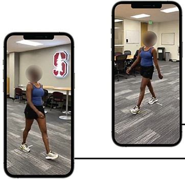
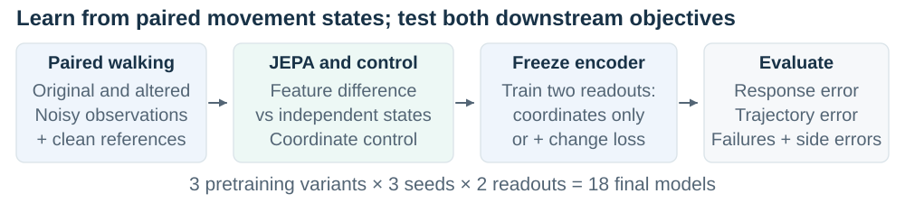
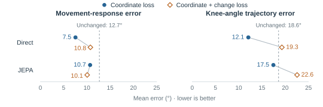
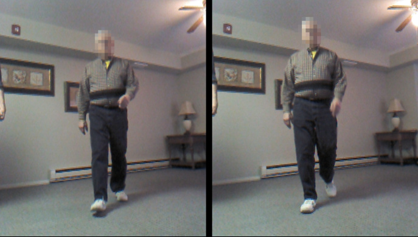

Gait Fidelity
Preserving movement changes in learned pose restoration
Research overview · 24 September 2026 · Completed synthetic core; JEPA follow-up proposed
Introduction
When video suggests that someone bends a knee less, did their movement change, or did visibility and processing alter the measurement? Biomechanics needs reliable comparisons across conditions; ambient intelligence needs reliable observations beyond the laboratory. Scott Delp and colleagues' OpenCap uses smartphone videos for movement analysis [1]. James Landay and colleagues' Stanford AmI program studies unobtrusive sensing and plans natural-mobility studies [2].
Pose restoration corrects estimated joint trajectories. Lower position error or a plausible skeleton does not guarantee that restoration preserves a movement change's magnitude, direction, or side. Gait Fidelity asks whether predictive representation learning can better preserve that change when observations are imperfect.

Methodology
Recorded walking motions from AMASS, a collection of motion-capture datasets, supply original sequences and versions with controlled knee-flexion edits. Rendering supplies pose-estimator inputs and projected joint references. Comparisons within the same camera and observation condition isolate movement change; occlusion and labeling errors test sensitivity to observation quality. These are kinematic stress tests, not simulated clinical impairments.
For each leg, knee excursion spans the central 90% of image-plane hip–knee–ankle angles across frames: the 95th-percentile angle minus the 5th (e.g., 170° − 110° = 60°). The movement response is the between-state change in right-minus-left excursion, checked alongside trajectory accuracy.
A joint-embedding predictive architecture (JEPA) predicts clean-reference features from masked, noisy poses, using a teacher that averages the encoder's parameters over training. We hypothesize that learning relations between states before freezing makes movement changes easier to recover. The follow-up matches predicted feature differences to the teacher's differences; a control regresses each state's features independently. A new coordinate readout then learns corrections from the frozen encoder.

Experiments
The two JEPA objectives and a coordinate-difference control use three seeds and the core data and training schedule. Each encoder receives coordinate-only and coordinates-plus-change readouts (18 models) to test dependence on downstream supervision. Matched reference support and initial loss calibration constrain alternative explanations. The primary comparison uses the JEPA variants' change-supervised readouts; the interaction is secondary. End-to-end coordinate training and frozen, randomly initialized encoders test practical utility and pretraining value. Person-balanced scores include failures and report their contribution; a zero-change benchmark checks for insensitivity.
Results
The completed core favors direct coordinate training. Across 14 development participants and three seeds, it had the lowest mean on all nine exported metrics. Relative to unchanged poses, response error fell from 12.688° to 7.544° (40.5%), and waveform error from 18.571° to 12.073°. The exploratory response improvement was 5.144° (descriptive 95% interval: 2.152°–8.651°) [3].

In the declared comparison, JEPA had 0.688° lower response error than direct training, both with change supervision. The descriptive 95% interval, resampling people and seeds, was −0.640° to +1.977°: a JEPA advantage remains unresolved. Its waveform error was 3.272° higher. Adding change supervision worsened waveform error in all five neural families and response error in four. JEPA also showed no clear response advantage over the initialized-encoder control. These findings motivate the follow-up; they do not establish its mechanism or success.
Discussion
The core shows why a movement-processing system needs evaluation of the change it will be used to interpret, alongside trajectory accuracy. The follow-up tests a feature-difference objective beyond independent-state regression and asks whether its benefit depends on readout supervision. That dependence requires a direct interaction estimate; the experiment cannot uniquely identify the cause of the core tradeoff. Shared errors can cancel in a difference, so response gains need waveform checks and failure analysis.
The current evidence concerns synthetic observations, projected angles, and a reused development population. For biomechanics and ambient intelligence, the next step is independent validation against synchronized movement references, including repeatability and visibility changes. The connection to world-model research is predictive representation learning; this model does not forecast future motion. Its potential contribution is evidence about when learned reconstruction supports a trustworthy movement comparison.

Sources: [1] Uhlrich et al., OpenCap (2023). [2] Stanford Ambient Intelligence. [3] Core analysis and uncertainty; full proposal and amended design. [4] Dawe et al. (2019).